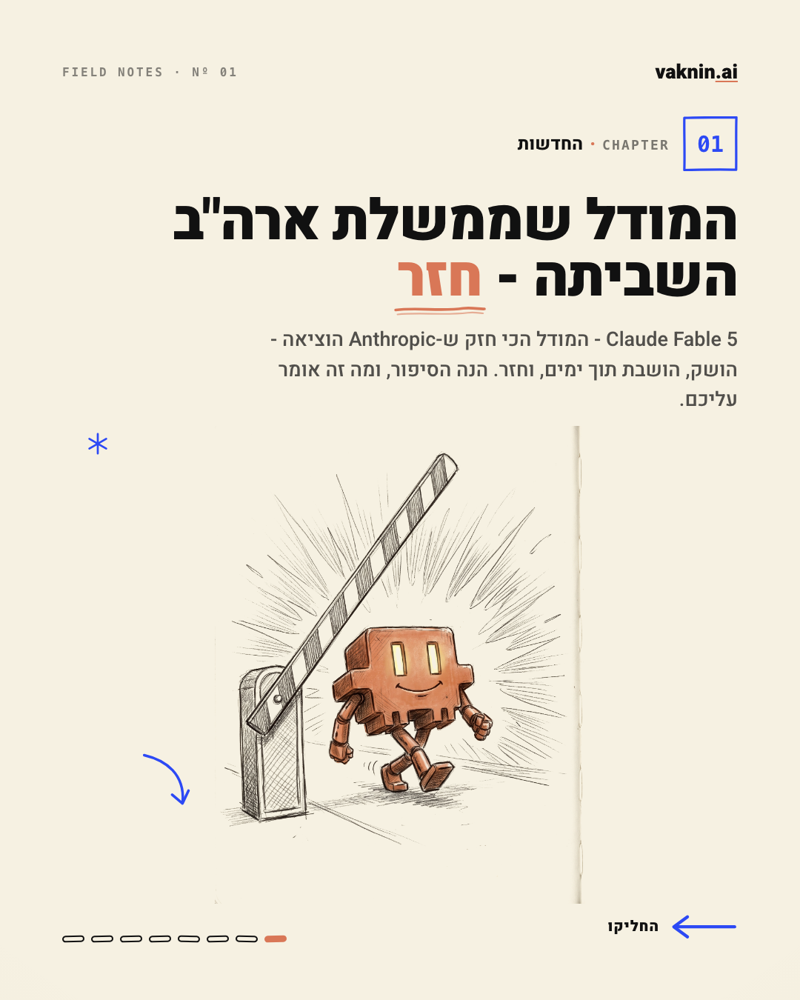
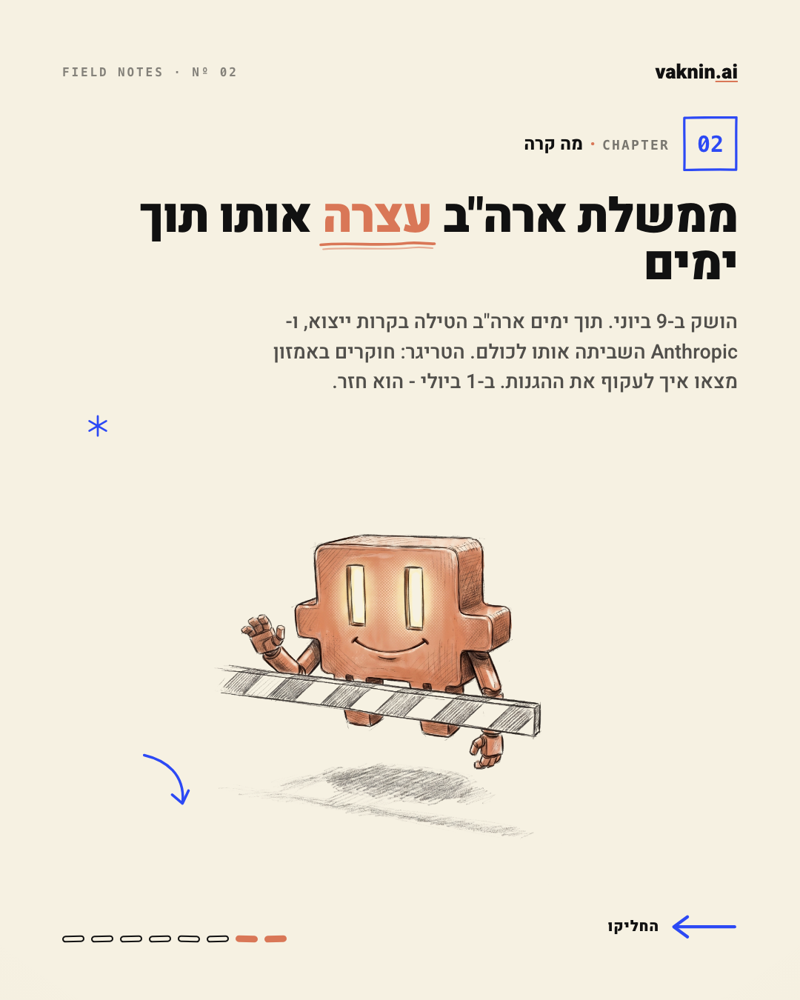
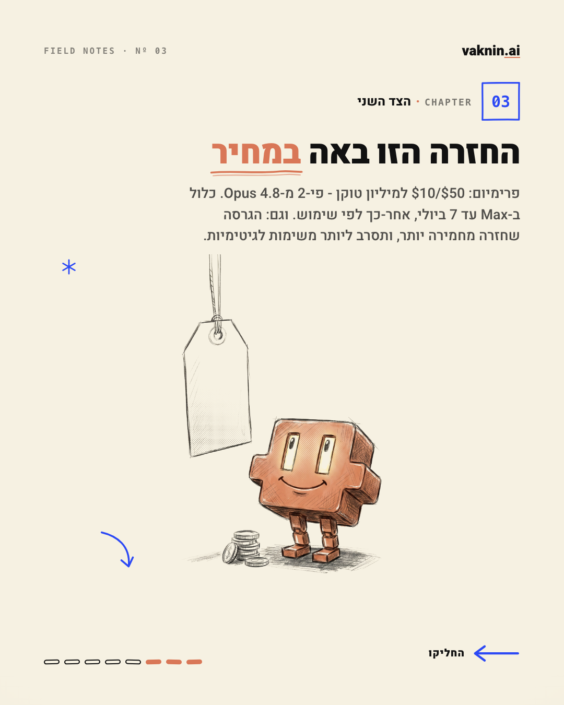
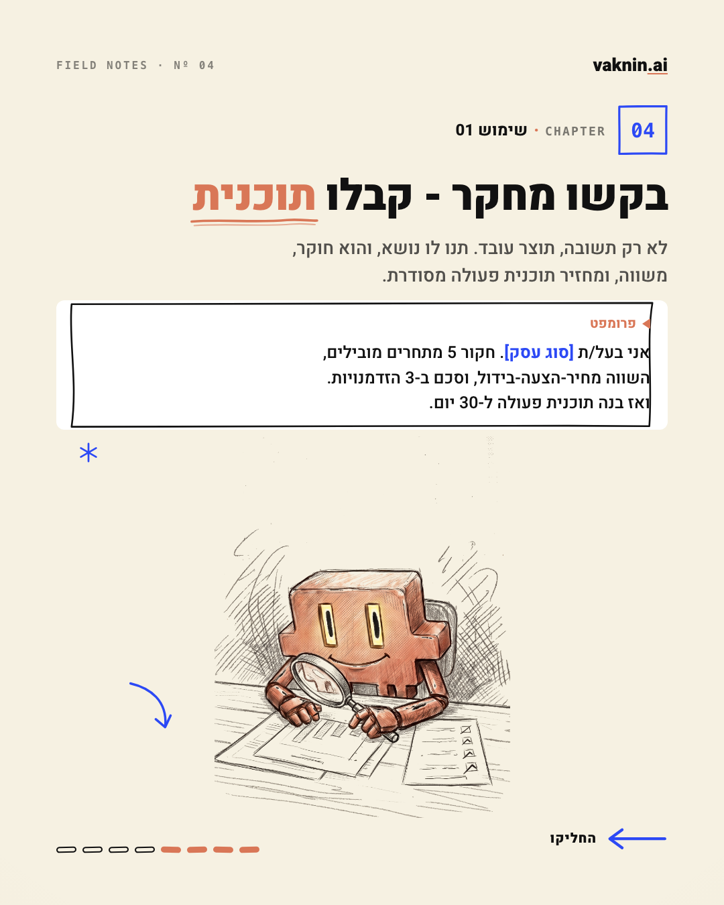
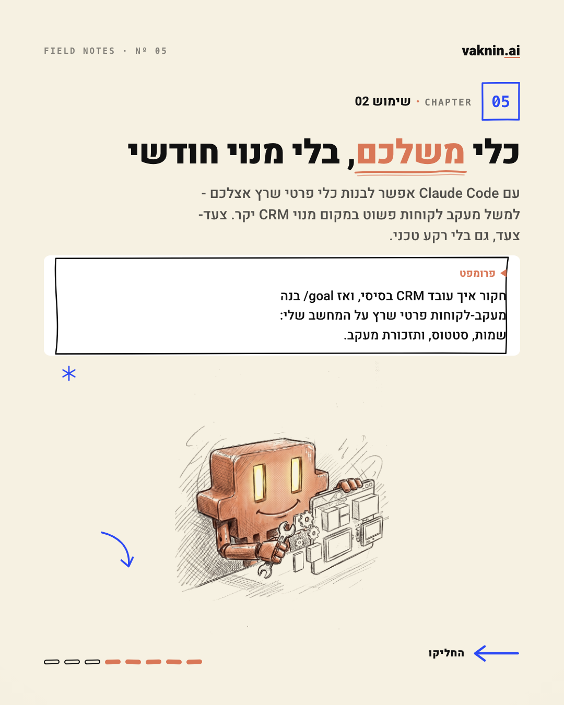
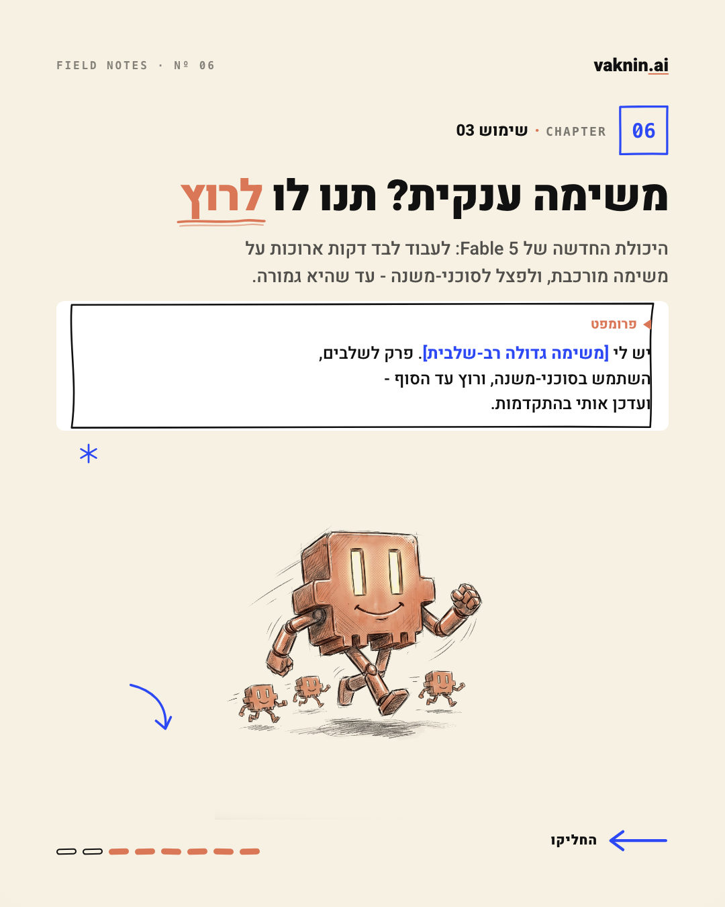
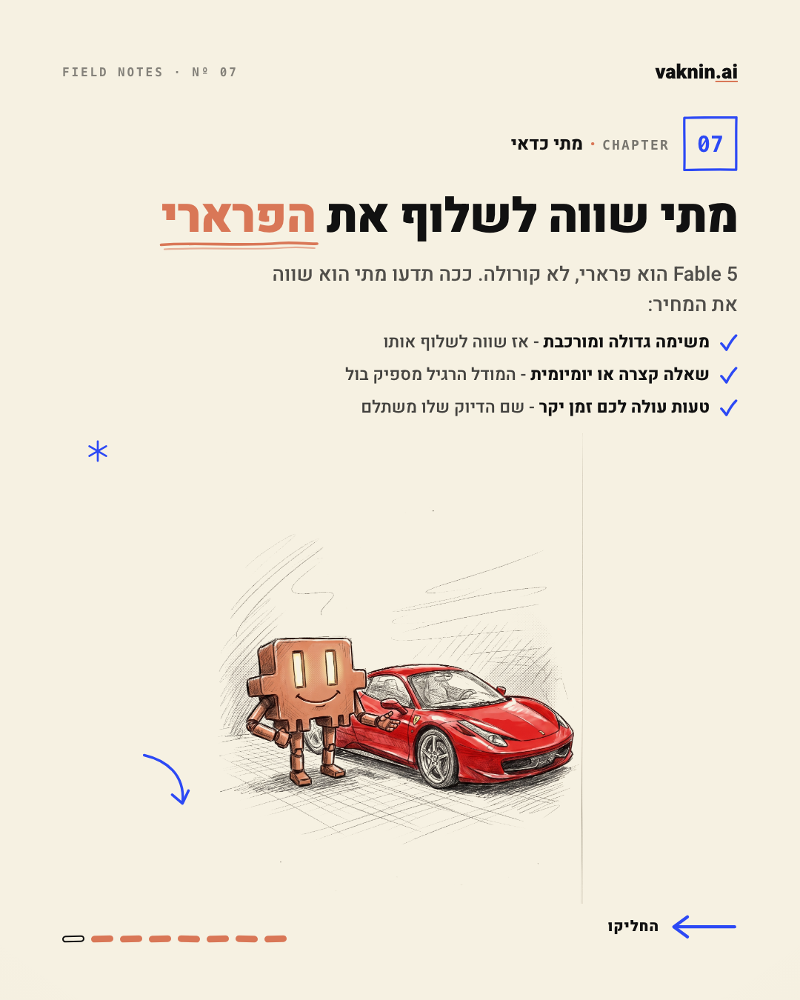
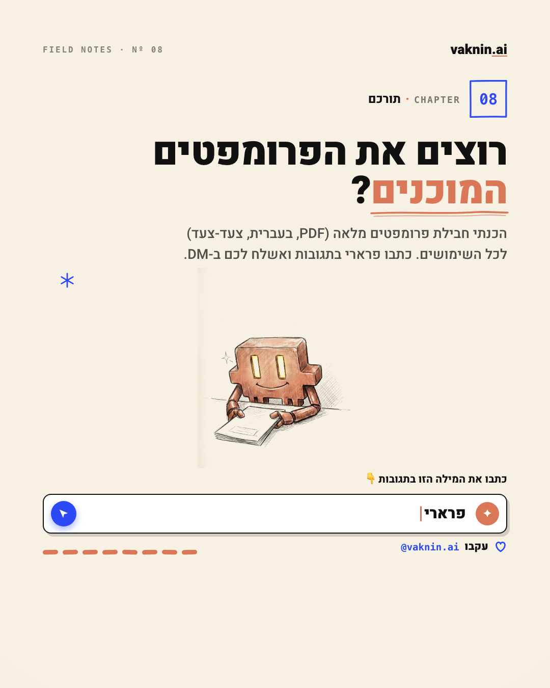

הפוסט — קרוסלה (8 שקופיות)
מחליקים מ-1 ל-8. חדשות (1-3) → ערך עם פרומפטים (4-6) → מתי כדאי / פרארי (7) → CTA "פרארי" (8).
1 · החדשות (הושבת → חזר)
2 · מה קרה (ציר הזמן)
3 · הצד השני (מחיר + מחמיר)
4 · שימוש 01 — מחקר/תוכנית
5 · שימוש 02 — כלי CRM משלכם
6 · שימוש 03 — סוכן שרץ לבד
7 · מתי כדאי (פרארי)
8 · תורכם (CTA "פרארי")
בהמשך
קאפשן + האשטגים ומגנט הלידים (PDF, חבילת פרומפטים, כריכה = המסקוט נוהג בפרארי) — יתווספו לתצוגה אחרי אישור הקרוסלה.
vaknin.ai · תצוגה זמנית לאישור